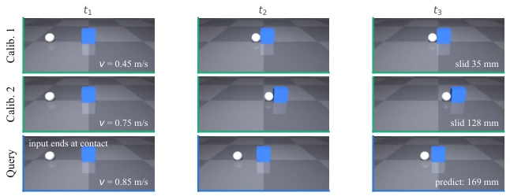
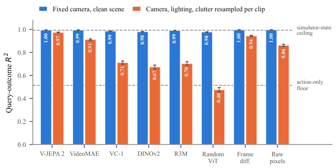
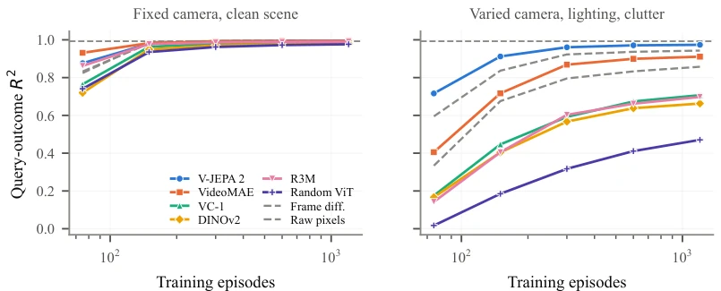

这篇论文给具身 AI 的“物理直觉”测试泼了盆冷水。作者发现，在干净、固定视角的场景里，连随机初始化的 ViT 都能靠像素位移作弊，骗过线性探针，让所有模型看起来都懂物理。CALIPER 基准测试通过“校准 - 预测”任务，强制模型利用交互历史而非视觉捷径。虽然仿真环境略显简陋，仅针对刚体盒子，但“交换校准片段”的测试极其犀利，直接揭穿了现有基准无法区分模型能力的真相。这不仅是评估方法的革新，更是对“表征即理解”的当头棒喝。它提醒我们，基准的区分能力必须被审计，而非假设，否则评估结果毫无意义。
This paper casts doubt on the "physical intuition" tests for embodied AI. The authors find that in clean, fixed-viewpoint scenes, even randomly initialized ViTs can cheat via pixel displacement, deceiving linear probes and making all models appear to understand physics. The CALIPER benchmark forces models to utilize interaction history rather than visual shortcuts through "calibration-prediction" tasks. Although the simulation environment is somewhat simplistic, targeting only rigid body boxes, the "swapping calibration segments" test is extremely incisive, directly exposing the truth that existing benchmarks cannot distinguish model capabilities. This is not only an innovation in evaluation methods but also a wake-up call to the concept of "representation is understanding". It reminds us that the discriminative ability of benchmarks must be audited, not assumed, otherwise evaluation results are meaningless.
Existing physical reasoning benchmarks (such as IntPhys, Physion) often assume scenes can distinguish models, but the authors find that fixed-camera scenes have "leakage": object displacement directly corresponds to pixel coordinates, requiring no physical inference. Perturbation benchmarks also often fail due to perturbations being too small (<10^-4), even fitting integrator noise. This results in an inability to distinguish models that truly understand physics (such as V-JEPA 2) from random models. Referencing Agrawal et al.'s work on physical learning, it points out that current evaluations lack an audit of benchmark discriminative ability. A test is needed that forces models to utilize interaction evidence rather than visual shortcuts; otherwise, evaluation results are meaningless and may even mislead model selection.
The CALIPER process is divided into calibration and prediction. First, a standard hockey puck strikes the target twice at a known speed (calibration), showing the complete sliding process; the third strike (query) is shown only until the moment of contact, requiring the model to predict the sliding distance. The key innovation lies in "segment swapping": replacing calibration segments with those of another object; if performance drops, it proves physical evidence was utilized. Two scenarios are set for experiments: clean scenes (fixed camera) and perturbed scenes (random camera, lighting, occlusion). Additionally, "erasure" tests are conducted via iterative null-space projection to verify whether decoded attributes are truly used for prediction, rather than merely being linearly separable. All representations share the same linear reader to ensure fair comparison. Through this design, models cannot rely on appearance shortcuts and must infer mass and friction.

Figure 1: One CALIPER episode. A standard puck strikes a target of unknown mass and friction at two known speeds (calibration), and the resulting slides reveal the target’s physics. A third collision at a new speed is the query; the model’s input stops at the moment of contact, so it contains the action but not its consequence. The model predicts the displacement that follows. Appearance is sampled independently of mass and friction.
实验Experiments
在 2000 次模拟中测试 8 种表征。干净场景下，所有模型 R2 均接近天花板（0.99），随机 ViT 仅差 0.02，基准失效。干扰场景下，R2 跨度达 0.50，V-JEPA 2 最优（0.974），随机 ViT 跌至基准线（0.476）。探针测试显示，帧聚合方式改变可提升探针准确率但不改变预测，证明探针不可靠。擦除测试表明，属性解码的代价随场景变化，进一步证实线性可分不等于使用。这揭示了基准审计的重要性，并提供了三个检查项来验证基准能力。
8 representations were tested in 2000 simulations. In clean scenes, all models' R2 scores were near the ceiling (0.99), with random ViT only 0.02 lower, rendering the benchmark ineffective. In perturbed scenes, the R2 span reached 0.50, with V-JEPA 2 being optimal (0.974), while random ViT dropped to the baseline (0.476). Probe tests show that changing frame aggregation methods can improve probe accuracy without changing predictions, proving probes unreliable. Erasure tests indicate that the cost of attribute decoding varies with scenes, further confirming that linear separability does not equal usage. This reveals the importance of benchmark auditing and provides three check items to verify benchmark capabilities.

Figure 2: Same task, two scenes. With a fixed camera and clean table (blue) every representation reaches the ceiling. With camera, lighting, floor, and distractors resampled per clip (orange) the same representations spread across 0.498 R2, and the random ViT drops to the floor set by the commanded speed alone.

Figure 3: Query-outcome R2 against training-set size. Left: in the clean scene every representation converges to the same plateau. Right: under nuisance variation the ordering of Table 1 holds at every training size.